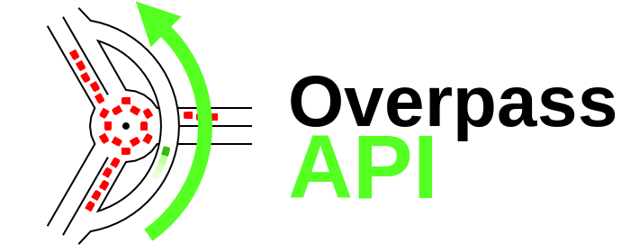
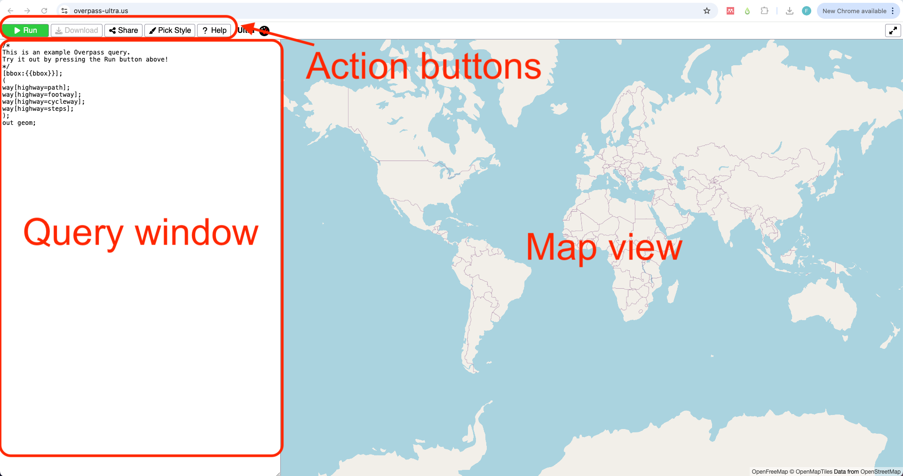
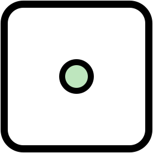
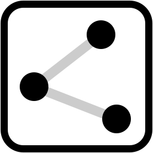
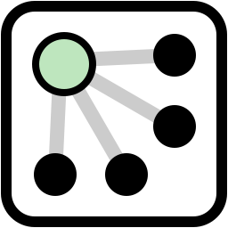
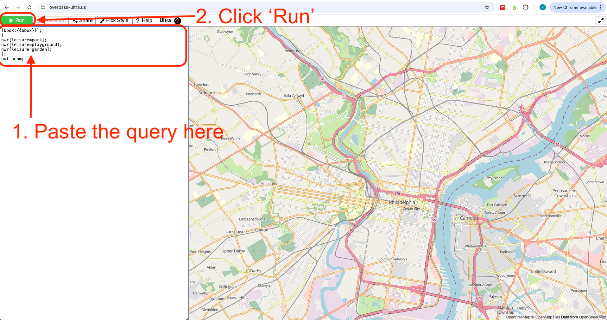
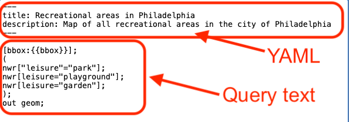

Overpass Ultra Tutorial
1 What is Ultra?

Ultra (née Overpass Ultra) is a web-application made to simplify making maps with MapLibre GL JS with data from various file/query types such as Overpass, GeoJSON, GPX, and more.
Developed by Daniel Schep
2 What is Overpass?

The Overpass API is a read-only service that lets users retrieve specific OpenStreetMap (OSM) data based on custom queries.
Unlike OSM’s main API, which focuses on editing, Overpass is optimized for data retrieval, handling anything from a few elements to millions in minutes.
Users can filter data by location, object type, tags, and more. Overpass Ultra, a web-based tool, helps with query creation.
Refer to the user manual and Overpass QL guide for details.
3 Building an overpass query
In this step-by-step tutorial we will learn how to create, style and share a map in Ultra.
We will be creating an interactive map of all recreation areas in Philadelphia.
01 Open a new map in Ultra
Go to https://overpass-ultra.us/.
The first time you open the web you will see a default map like this:

02 Type your query
A query is a way to filter and retrieve data from OpenStreetMap. It allows you to search for specific types of map features.
Queries in Ultra follow the strcuture of the Overpass API.
If you are not familiar with OpenStreetMap data, see the info window below:
All data in OSM is represented by an element.
An element can be either a node , a way  or a relation .
Each element is described using tags which are the combination of a key and a value .
For example, a coffee shop is represented by an element type node with tags amenity=cafe.
Learn more about elements and tags here.
The ‘anatomy’ of a query: Hover over the numbers on the right in the code to reveal what each line on the query does
The following is the default query you see when you open Ultra for the first time:
/*
This is an example Overpass query.
Try it out by pressing the Run button above!
*/
[bbox:{{bbox}}];
(
way[highway=path];
way[highway=footway];
way[highway=cycleway];
way[highway=steps];
);
out geom;- 1
-
This is a comment. Everithing inside
/* */will not be considered in teh query. - 2
-
This lines defines a
bboxwhich limits the query to what you are viewing on the map. - 3
-
This line retrieves an element type
waythat has the keyhighwayand valuepath. - 4
-
All single queries within the
()are grouped together. - 5
-
The output format for your query. In this case
geomreturns the actual shape of the features.
For this example we will use the following query.
As there are different types of recreational areas, we will be using a group of three queries with different combinations of value for the key leisure. We will be quering elements tagged: "leisure":"park", "leisure":"playground" and "leisure":"garden". There are more tags that can describe this areas. Explore your own case study in OSM.
Remember to zoom in to your ineterest area. Keep your query area small to retrieve data faster.
[bbox:{{bbox}}];
(
nwr[leisure="park"];
nwr[leisure="playground"];
nwr[leisure="garden"];
);
out geom;- 6
-
We will keep the
[bbox:{{bbox}}];line to filter the query to the map view. - 7
- Here we start our grouped query. As there are different types of areas, we will be using three values.
- 8
-
One way to tag recreational areas is
leisure:"park". Note that we usenwrto get anynode,wayorrelation. - 9
-
Our second query is
leisure:"playground". - 10
-
The third type we are quering is
leisure:"garden". - 11
- We close our query retrieving the geomtery of the elements.
03 Run your query
Copy and paste this query in Ultra’s query window, and then click ‘Run’

After some seconds you will see the results display on the map. All results are shown in yellow. In the next steps we will learn how to style the results.
Learn more on how to build a query here
4 Styling in Ultra
In Ultra, you can style the map elements by adding a style: key on a YAML front-matter. This YAML front-matter is a way to add metadata to the query file. All these will be read by Maplibre and Ultra when rendering your resulting map.
01 Add a title and description
The YAML front-matter has to be framed inside ---, just like in the example below.
---
title: Recreational areas in Philadelphia
description: Map of all recreational areas in the city of Philadelphia
---- 1
- Opening the YAML front-matter text.
- 2
- Title property to be incldued.
- 3
- Description text to be included.
- 4
- Closing line of the YAML front-matter.
Copy and paste (or type) the YAML front-matter with the title and description properties into the Ultra query we created in the previous section.
Paste the YAML front-matter before the query text.

5 Adding interactivity to the map
Attribution
Open Geospatial Data by Felipe Valdez is licensed under CC BY-NC-SA 4.0